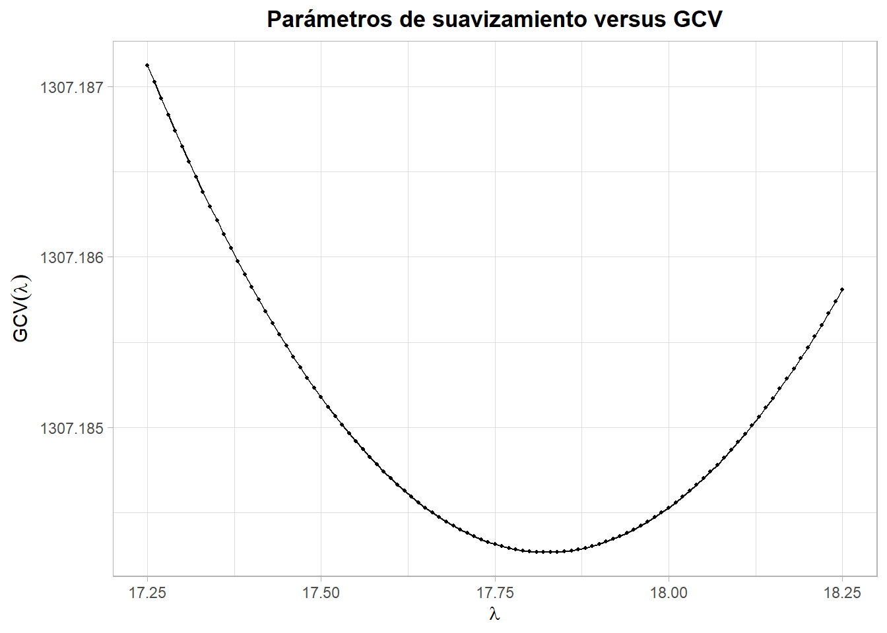
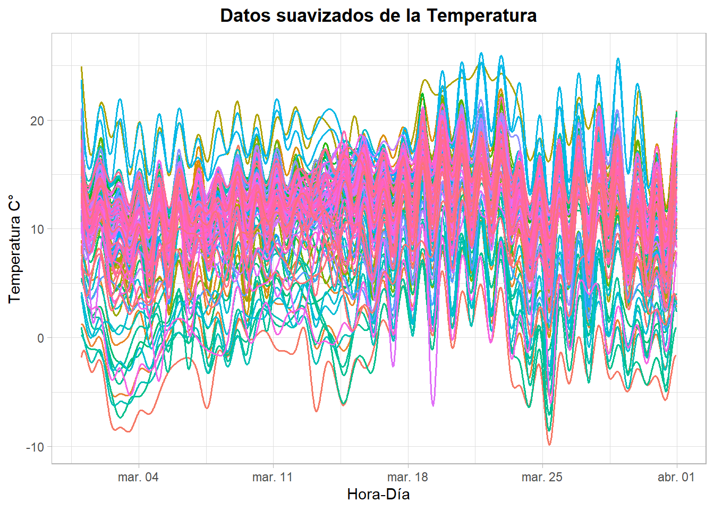
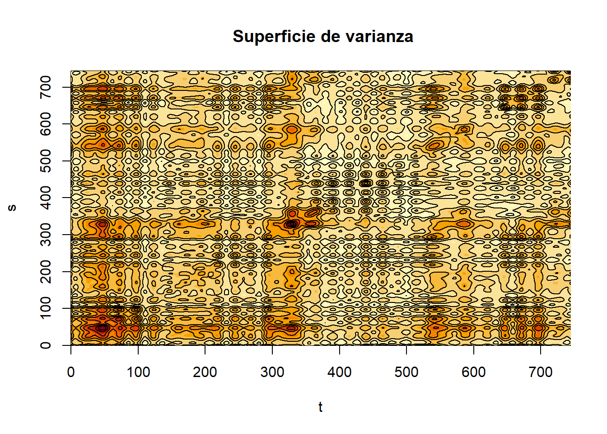
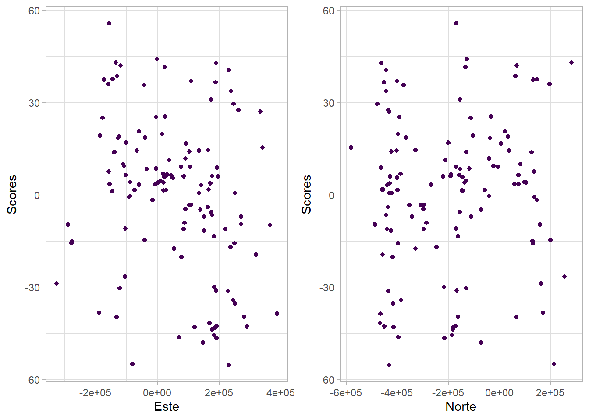
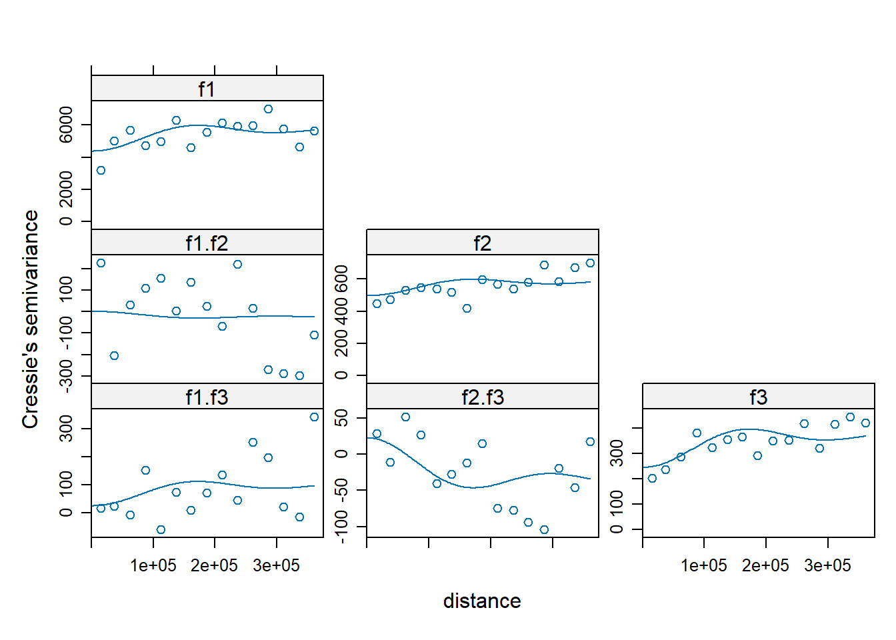
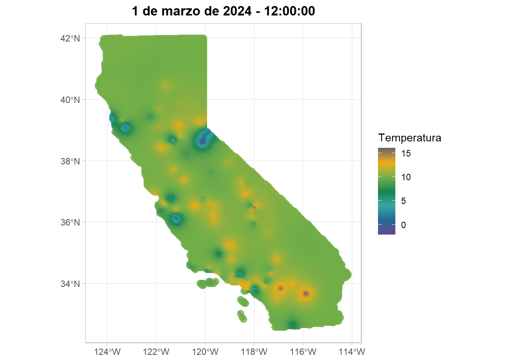
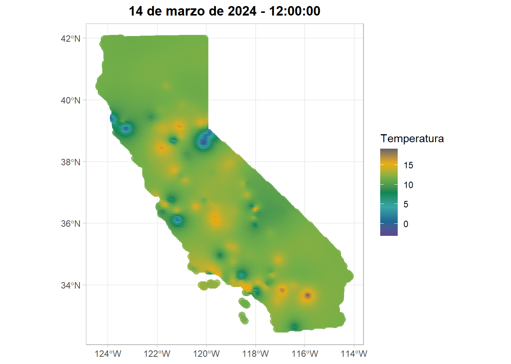

krig_list <- list()
Progress <- txtProgressBar(min = 0, max = nrow(Temp), style = 3)
for (i in 1:nrow(Temp)){
y_T <- Temp[i,] #Tomar una fecha
y_T <- cbind(colnames(y_T),t(y_T[1,]))
y_T <- y_T[-1,]
y_T <- as.data.frame(y_T)
y_T <- na.omit(y_T)
y_T$V1 <- as.numeric(y_T$V1)
y_T <- inner_join(y_T, EstacionesT, by=c("V1"="AQSID"))
datosT <- y_T[,c(13,14,2)]
colnames(datosT)=c("Este","Norte","Temperatura")
datosT$Temperatura <- as.numeric(datosT$Temperatura)
temp <- as.geodata(datosT)
vg <- quiet(
variog(temp, trend = ~Norte+Este+I(Este^2)+I(Este^3),
estimator.type = "modulus", pairs.min=50,
max.dist=7e5))
est1 <- quiet(
variofit(vg, cov.model = "exponential", ini=ini1_exp_T,
fix.nugget = F,
wei = "cressie"))
est3 <- quiet(
variofit(vg, cov.model = "spherical", ini=ini1_es_T,
fix.nugget = F,
wei = "cressie"))
par1 <- c(est1$nugget, est1$cov.pars[1], est1$cov.pars[2])
par3 <- c(est3$nugget, est3$cov.pars[1], est3$cov.pars[2])
mse1 <- MSE_sv(vg$v, par1, NA, model = "exponencial", vg$u)
mse3 <- MSE_sv(vg$v, par3, NA, model = "spherical", vg$u)
mse_values <- c(exponential = mse1, spherical = mse3)
best_model <- names(which.min(mse_values))
best_fit <- switch(best_model,
exponential = est1,
gaussian = est2,
spherical = est3)
model_gstat <- switch(best_model,
exponential = "Exp",
gaussian = "Gau",
spherical = "Sph")
vgm_best <- gstat::vgm(psill = best_fit$cov.pars[1],
model = model_gstat,
range = best_fit$cov.pars[2],
nugget = best_fit$nugget)
y_T_NA <- Temp[i, ]
y_T_NA <- cbind(colnames(y_T_NA), t(y_T_NA[1,]))
y_T_NA <- y_T_NA[-1,]
y_T_NA <- as.data.frame(y_T_NA)
y_T_NA <- y_T_NA[is.na(y_T_NA$V2), ] # Filtrar las estaciones sin dato
y_T_NA$V1 <- as.numeric(y_T_NA$V1)
Estaciones <- y_T_NA$V1
y_T_NA <- inner_join(y_T_NA, EstacionesT, by = c("V1" = "AQSID"))
y_T_NA <- y_T_NA[,c(13,14,2)]
colnames(y_T_NA)=c("Este","Norte","Temperatura")
if (nrow(y_T_NA)==0) {
warning(paste("No valores faltantes a estimar", i))
next
}
pred_grid <- y_T_NA[, c("Este", "Norte")]
coordinates(datosT) <- ~Este+Norte
coordinates(pred_grid) <- ~Este + Norte
krig_result <- quiet(gstat::krige(
formula = Temperatura ~ Norte + Este + I(Este^2) + I(Este^3),
locations = ~ Norte + Este,
data = as.data.frame(datosT),
newdata = pred_grid,
model = vgm_best,
nmin =20
))
Temp[i, as.character(Estaciones)] <- t(krig_result@data[["var1.pred"]])
setTxtProgressBar(Progress, i)
}
Temp[,-1] <- lapply(Temp[ , -1], function(x) round(as.numeric(x), 1))4 Análisis Geoestadístico Funcional
Análisis Geoestadístico Funcional de la Temperatura y el Ozono en el Estado de California durante marzo de 2024
4.1 Planteamiento del problema
4.1.1 Introducción
La calidad del aire es un elemento fundamental para la salud pública, el bienestar de las comunidades y el equilibrio de los ecosistemas. El deterioro de este recurso no solo incrementa el riesgo de enfermedades respiratorias y cardiovasculares, sino que también afecta la productividad, la calidad de vida y el funcionamiento de los sistemas naturales. En los últimos años, la preocupación por la contaminación atmosférica ha crecido debido a la combinación de factores antropogénicos y ambientales que intensifican la presencia de compuestos dañinos en la atmósfera, entre ellos el ozono troposférico y las variaciones extremas de temperatura.
En el estado de California, esta problemática adquiere una dimensión particular. Su elevada densidad poblacional, el tránsito vehicular, la actividad industrial y ciertos fenómenos naturales, como los incendios forestales, cada vez más frecuentes, contribuyen a que numerosas ciudades presenten niveles críticos de contaminación. Estas condiciones hacen necesario un análisis más profundo de la dinámica espacial y temporal de los contaminantes atmosféricos. En este contexto, el uso de herramientas estadísticas avanzadas, como el análisis funcional y la predicción espacial, se convierte en un enfoque útil para comprender los patrones subyacentes y apoyar la toma de decisiones en materia ambiental.
4.1.2 Descripción de los datos
Los datos objeto de este estudio provienen de la Agencia de Protección Ambiental (EPA) de los Estados Unidos y corresponden a registros horarios obtenidos de las estaciones de monitoreo durante el mes de marzo de 2024. En particular, se analizan las variables Temperatura ambiente (Temp) y Ozono (O_3).
4.1.2.1 Unidades
Temperatura ambiente: Medida en grados celsius (C°) con una intensidad horaria.
Ozono: Medida en partes por billón (ppb) con una intensidad horaria.
4.1.3 Objetivos
4.1.3.1 Objetivo general
Analizar las estructuras temporales y espaciales de las variables ozono y temperatura en California durante marzo de 2024 mediante técnicas de análisis de datos funcionales (FDA), con el fin de construir un modelo de covarianza espacial basado en componentes principales funcionales (FPCA) que permita realizar predicciones espacialmente coherentes de ambas variables.
4.1.3.2 Objetivos específicos
Construir las curvas funcionales de ozono y temperatura mediante un proceso de suavizamiento apropiado, empleando bases de B-splines cúbicas y estimando el parámetro de penalización (\lambda) por validación cruzada.
Aplicar el análisis de componentes principales funcionales (FPCA) y obtener los scores funcionales, para luego estudiar y modelar la dependencia espacial mediante la construcción del semivariograma empírico y el ajuste de modelos teóricos.
Implementar Kriging Funcional para generar mapas de predicción espacial y mapas de incertidumbre, utilizando los componentes principales y la estructura espacial estimada, con el fin de representar la distribución esperada de las variables y evaluar la precisión de las estimaciones.
4.2 Análisis Geoestadístico Funcional
4.2.1 Variable Temperatura
En el siguiente bloque se muestra el código utilizado para imputar los valores faltantes en las 127 estaciones de California a lo largo de las 744 observaciones temporales. A partir de los modelos ajustados en el Análisis Univariado, se estimó un semivariograma para cada instante en el tiempo, seleccionando el modelo adecuado según el criterio de MSE. Finalmente, la predicción espacial se llevó a cabo mediante la función krige() del paquete gstat.
En el siguiente gráfico se presentan las series de tiempo de los valores observados de manera horaria para 127 estaciones en el mes de marzo de 2024.
Ver código
#Librerias necesarias ------------------------------------
set.seed(123)
library(dplyr)
library(geoR)
library(sp)
library(readxl)
library(tidyr)
library(sf)
library(ggplot2)
library(knitr)
library(plotly)
library(leaflet)
library(raster)
library(stars)
library(fda)
library(fda.usc)
library(terra)
library(SpatFD)
library(gstat)
library(rcartocolor)
#Gráficos de dispersión ----------------------------------
simple_scatter_plot <- function(datos, variable1, variable2) {
plot1 <- ggplot(as.data.frame(datos),
aes(x = .data[[variable1]], y = .data[[variable2]],
color = as.factor(1))) +
geom_point() +
scale_colour_viridis_d() +
labs(
x = variable1,
y = variable2
) +
theme_light() +
theme(legend.position = "none")
return(plot1)
}
#-----------------------------------------------------------
Temp <- read_excel("Temp_imp.xlsx", sheet = "Temperatura")
Temp <- as.data.frame(Temp)
EstacionesT <- read_excel("Temp_imp.xlsx", sheet = "Estaciones")
EstacionesT <- EstacionesT[,c(1,12,13)]
#Para el mapa de California -------------------------------
sh_mundos<-st_read("admin00.shp",quiet=TRUE)
sh_mundos <- sh_mundos %>% filter(CNTRY_NAME=="United States")
sh_mundos <- sh_mundos %>% filter(ADMIN_NAME=="California")
CRS_UTM_NY = "+init=epsg:3310"
sh_mundos_wgs84 <- st_transform(sh_mundos, crs = 4326)
sh_mundos_utm <- st_transform(sh_mundos, crs = CRS("EPSG:3310"))
sh_mundos_sp_utm <- as(sh_mundos_utm, "Spatial")
sh_mundos_utm_simple <- st_union(sh_mundos_utm)
sh_mundos_sp_utm_simple <- as(sh_mundos_utm_simple, "Spatial")
#Grilla para hacer kriging ------------------------------
new <- sp::spsample(as(sh_mundos_utm, "Spatial"), n = 10000, type = "regular")
proj4string(new) <- CRS("EPSG:3310")
invisible(coordinates(new) ~ Este + Norte)
colnames(new@coords) <- c("Este", "Norte")
Temp$DateTime <- as.POSIXct(Temp$DateTime,
format = "%m/%d/%y %H:%M:%S",
tz = "America/Bogota")
cols <- rainbow(ncol(Temp)-1)
ggplot() +
lapply(2:ncol(Temp), function(i) {
geom_line(aes(x = Temp$DateTime, y = Temp[[i]]),
color = cols[i-1],
alpha = 0.8)
}) +
labs(x = "Fecha", y = "Temperatura")+
theme_light()
4.2.1.1 Modelamiento con B-Splines
Para aplicar la metodología funcional es necesario suavizar previamente los datos. Para ello, se una base de B-Splines conformada por k=64 funciones. Luego de esto, se determinó el valor óptimo del parámetro de penalización \lambda mediante validación cruzada.
En el siguiente gráfico se muestra el comportamiento del GCV a lo largo del rango de valores evaluados para del parámetro de penalización, junto con un resumen tabular de los resultados obtenidos.
Ver código
temp <- as.matrix(Temp[,-1])
k <- round(ncol(temp)/2)
BSpl <- create.bspline.basis(rangeval=c(0,744),
nbasis=k, norder=4)
loglam = seq(17.25,18.25,0.01)
nlam = length(loglam)
dfsave = rep(NA,nlam)
gcvsave = rep(NA,nlam)
for (ilam in 1:nlam) {
lambda = loglam[ilam]
fdParobj = fdPar(BSpl, Lfdobj=NULL, lambda= lambda)
smoothlist = smooth.basis(1:nrow(temp), temp, fdParobj)
dfsave[ilam] = smoothlist$df
gcvsave[ilam] = sum(smoothlist$gcv)
}
ggplot(data.frame(
loglam = loglam,
gcv = gcvsave
),
aes(x = loglam, y = gcv)) +
geom_point(size = .8) +
geom_line() +
labs(
x = expression(lambda),
y = expression(GCV(lambda)),
title = "Parámetros de suavizamiento versus GCV"
) +
theme_light()+theme(
plot.title = element_text(hjust = 0.5,
face = "bold")
)
Ver código
best.idx <- which.min(gcvsave)
best.lambda <- loglam[best.idx]
knitr::kable(data.frame(lambda = best.lambda,
GCV=round(min(gcvsave), 3)),
escape = F,
col.names = c("$$\\lambda$$", "$$GCV$$"),
align='c')| \lambda | GCV |
|---|---|
| 17.82 | 1307.184 |
Con los valores estimados de k y \lambda se procede a realizar el suavizamiento mediante B-Splines. En la siguiente figura se muestran las curvas suavizadas obtenidas a partir de esta base.
Ver código
Ftemp <- Data2fd(y=temp, basisobj=BSpl, lambda = best.lambda)
inicio <- as.POSIXct("2024-03-01 00:00:00", tz = "America/Bogota")
inicio <- inicio + (0:743)*3600
t_eval <- seq(0, 744, length.out = 744)
eval_Ftemp <- eval.fd(t_eval, Ftemp)
eval_Ftemp <- as.data.frame(eval_Ftemp)
eval_Ftemp$t <- inicio
eval_Ftemp$t1 <- t_eval
eval_Ftemp <- pivot_longer(
eval_Ftemp,
cols = c(-t,-t1),
names_to = "Estacion",
values_to = "Temperatura"
)
ggplot(eval_Ftemp, aes(x = t, y = Temperatura, group = Estacion, col=Estacion)) +
geom_line(linewidth = 0.7) +
labs(
title = "Datos suavizados de la Temperatura",
x = "Hora-Día",
y = "Temperatura C°"
) +
theme_light() +
theme(
plot.title = element_text(hjust = 0.5, face = "bold"),
legend.position = "none"
)
Los resultados muestran que el suavizamiento logra reproducir de forma consistente la tendencia y la variabilidad general de las series de tiempo originales. Por lo tanto, se concluye que los valores de k y \lambda proporcionan un balance apropiado entre fidelidad y suavidad.
4.2.1.1.1 Estadística descriptiva
Adicionalmente, con el propósito de caracterizar las tendencias capturadas por el ajuste, se presenta un resumen descriptivo del proceso de suavizamiento.
Ver código
meanfdh <- mean.fd(Ftemp)
varfdh <-var.fd(Ftemp)
stdvfdh <- stddev.fd(Ftemp)Ver código
ggplot(eval_Ftemp, aes(x = t, y = Temperatura, group = Estacion, col=Estacion)) +
geom_line(linewidth = 0.7, show.legend = F) +
geom_line(data = data.frame(t = eval_Ftemp$t,
Media = eval.fd(eval_Ftemp$t1, meanfdh)),
aes(x = t, y = mean,, group = 1),
linewidth = 1.2, col="red",
inherit.aes = FALSE )+
labs(
title = "Media de los suavizados de la Temperatura",
x = "Hora-Día",
y = "Temperatura C°"
) +
theme_light() +
theme(
plot.title = element_text(hjust = 0.5, face = "bold"),
)
Ver código
plot(varfdh, main=" Superficie de varianza", xlab = "t", ylab = "s")
Ver código
data.frame(
t = eval_Ftemp$t,
std = as.vector(eval.fd(eval_Ftemp$t1, stdvfdh))
) %>%
ggplot(aes(x = t, y = std)) +
geom_line(color = "steelblue", linewidth = 1) +
labs(
title = "Desviación estándar",
x = "Hora-Día",
y = "Temperatura °C"
) +
theme_light() +
theme(
plot.title = element_text(hjust = 0.5, face = "bold")
)
4.2.1.2 Componentes Principales
Se lleva a cabo un análisis de componentes funcional (ACPF) con el propóstio de reducir la dimensión de las funciones. Para ello, se emplea la función pca.fd() del paquete fda.
Se seleccionaron las 10 primeras funciones propias como base para el análisis. A continuación, se presenta de forma gráfica el porcentaje de varianza acumulada explicado por cada componente.
Ver código
PCA = pca.fd(Ftemp, 10)
data.frame(
Dim = 1:10,
Perc = round(PCA$varprop*100,2)
) %>%
ggplot(aes(x = Dim, y = Perc)) +
geom_col(fill = "#7EC0EE", width = 0.7, alpha = 0.8) +
geom_line(aes(y = Perc), linewidth = 0.8) +
geom_point(size = 1.5) +
geom_text(aes(label = paste0(round(Perc,1), "%")),
vjust = -0.5, size = 3) +
scale_x_continuous(breaks = 1:10) +
labs(
title = "Valores propios del FPCA",
x = "Dimensiones",
y = "Porcentaje de varianza explicada"
) +
theme_light() +
theme(
plot.title = element_text(hjust = 0.5, face = "bold")
)
Debido a que los tres primeros componentes principales concentran más del 90 % de la variabilidad total de las funciones, se opta por utilizar únicamente estos componentes en el análisis geoestadístico.
Ver código
coordsT <- EstacionesT[,c(2,3)]
PC1T <- cbind(Scores=PCA$scores[,1], coordsT)
PC2T <- cbind(Scores=PCA$scores[,2], coordsT)
PC3T <- cbind(Scores=PCA$scores[,3], coordsT)Para avanzar con el análisis geoestadístico, se examina primero el comportamiento de la media con el fin de determinar si existe algún efecto espacial que deba corregirse mediante un modelo de regresión adecuado. A continuación, se presentan las matrices de correlación y los gráficos de dispersión para los Scores y las coordenadas, cuyo propósito es identificar patrones que sugieran la presencia de una tendencia espacial en la media.
Ver código
pander::pander(cor(PC1T))| Scores | Este | Norte | |
|---|---|---|---|
| Scores | 1 | 0.2639 | -0.1515 |
| Este | 0.2639 | 1 | -0.7656 |
| Norte | -0.1515 | -0.7656 | 1 |
Ver código
pO1 <- simple_scatter_plot(PC1T, "Este", "Scores")
pO2 <- simple_scatter_plot(PC1T, "Norte", "Scores")
cowplot::plot_grid(pO1,pO2)
Ver código
pander::pander(cor(PC2T))| Scores | Este | Norte | |
|---|---|---|---|
| Scores | 1 | -0.2497 | 0.06783 |
| Este | -0.2497 | 1 | -0.7656 |
| Norte | 0.06783 | -0.7656 | 1 |
Ver código
pO1 <- simple_scatter_plot(PC2T, "Este", "Scores")
pO2 <- simple_scatter_plot(PC2T, "Norte", "Scores")
cowplot::plot_grid(pO1,pO2)
Ver código
pander::pander(cor(PC3T))| Scores | Este | Norte | |
|---|---|---|---|
| Scores | 1 | -0.02491 | 0.1259 |
| Este | -0.02491 | 1 | -0.7656 |
| Norte | 0.1259 | -0.7656 | 1 |
Ver código
pO1 <- simple_scatter_plot(PC3T, "Este", "Scores")
pO2 <- simple_scatter_plot(PC3T, "Norte", "Scores")
cowplot::plot_grid(pO1,pO2)
Como se observa, los scores presentan media cero y no se identifica un patrón evidente entre ellos y las coordenadas Este y Norte. En consecuencia, se procede a modelar el semivariograma.
4.2.1.3 Estructura de Covarianza Espacial
4.2.1.3.1 Modelos Individuales
En segunda instancia, se analiza la variabilidad de la variable incrementos, derivada de los Scores, mediante las función variogram() y fit.variogram(), con el propósito de caracterizar su estructura espacial y ajustar el modelo de semivariograma correspondiente.
Ver código
puntaje=PCA$scores[,c(1:3)]
colnames(puntaje)=c("f1","f2","f3")
rownames(puntaje) = EstacionesT$AQSID
puntajes=as.data.frame(puntaje)
coordinates(puntajes)=coordsT
vg_PC1_T <- variogram(f1~1,puntajes, cressie=T)
vg_PC2_T <- variogram(f2~1,puntajes, cressie=T)
vg_PC3_T <- variogram(f3~1,puntajes, cressie=T)
vgcross <- gstat(NULL, id = "f1", form = f1 ~ 1, data = puntajes)
vgcross <- gstat(vgcross, id = "f2", form = f2 ~ 1, data = puntajes)
vgcross <- gstat(vgcross, id = "f3", form = f3 ~ 1, data = puntajes)
vgm.cross <- variogram(vgcross,, cressie=T)Ver código
exp_pc1T <- fit.variogram(vg_PC1_T, vgm("Exp"),
fit.method = 2)
plot(vg_PC1_T, model = exp_pc1T)
Ver código
pander::pander(exp_pc1T)| model | psill | range | kappa | ang1 | ang2 | ang3 | anis1 | anis2 |
|---|---|---|---|---|---|---|---|---|
| Nug | 0 | 0 | 0 | 0 | 0 | 0 | 1 | 1 |
| Exp | 5615 | 18273 | 0.5 | 0 | 0 | 0 | 1 | 1 |
Ver código
exp_pc2T <- fit.variogram(vg_PC2_T, vgm("Wav"),
fit.method = 7)
plot(vg_PC2_T, model = exp_pc2T)
Ver código
pander::pander(exp_pc2T)| model | psill | range | kappa | ang1 | ang2 | ang3 | anis1 | anis2 |
|---|---|---|---|---|---|---|---|---|
| Nug | 442.3 | 0 | 0 | 0 | 0 | 0 | 1 | 1 |
| Wav | 109.6 | 120168 | 0.5 | 0 | 0 | 0 | 1 | 1 |
Ver código
exp_pc3T <- fit.variogram(vg_PC3_T, vgm("Exp"),
fit.method = 7)
plot(vg_PC3_T, model = exp_pc3T)
Ver código
pander::pander(exp_pc3T)| model | psill | range | kappa | ang1 | ang2 | ang3 | anis1 | anis2 |
|---|---|---|---|---|---|---|---|---|
| Nug | 155.4 | 0 | 0 | 0 | 0 | 0 | 1 | 1 |
| Exp | 223.5 | 67327 | 0.5 | 0 | 0 | 0 | 1 | 1 |
Se observa un buen ajuste para la primera función propia mediante un modelo Exponencial, incluso con un efecto pepita nulo. ncluso sin requerir un efecto pepita. En contraste, para la segunda función propia se identifica un nugget elevado; aun así, el modelo Wave logra representar adecuadamente su comportamiento oscilatorio. En el caso de la tercera función propia, aunque también presenta un nugget considerable, el modelo Exponencial captura de manera satisfactoria la estructura del semivariograma.
A partir de estos resultados, se infiere que las estructuras de dependencia son compatibles principalmente con modelos Exponenciales o Wave, por lo que estos resultan los candidatos más adecuados para construir el modelo lineal de corregionalización.
4.2.1.3.2 Modelo Lineal de Corregionalización
El variograma cruzado se presenta en seguida:
Ver código
plot(vgm.cross)
Se opta por un modelo Wave para realizar el ajuste mediante la función fit.lmc() de gstat:
Ver código
vgcross <- gstat(vgcross, id = "f1", model = exp_pc2T,
fill.all = T)
g <- fit.lmc(vgm.cross, vgcross, fit.method=6, correct.diagonal=1.01)
plot(vgm.cross, model = g$model)
El resumen de los modelos ajustados para el modelo lineal de corregionalización se presenta de forma tabular a continuación:
Ver código
pander::pander(g$model)f1:
model psill range kappa ang1 ang2 ang3 anis1 anis2 Nug 4378 0 0 0 0 0 1 1 Wav 1314 120168 0.5 0 0 0 1 1 f1.f2:
model psill range kappa ang1 ang2 ang3 anis1 anis2 Nug 1.258 0 0 0 0 0 1 1 Wav -26.27 120168 0.5 0 0 0 1 1 f1.f3:
model psill range kappa ang1 ang2 ang3 anis1 anis2 Nug 25.81 0 0 0 0 0 1 1 Wav 71.34 120168 0.5 0 0 0 1 1 f2:
model psill range kappa ang1 ang2 ang3 anis1 anis2 Nug 496.1 0 0 0 0 0 1 1 Wav 83.63 120168 0.5 0 0 0 1 1 f2.f3:
model psill range kappa ang1 ang2 ang3 anis1 anis2 Nug 22.78 0 0 0 0 0 1 1 Wav -56.9 120168 0.5 0 0 0 1 1 f3:
model psill range kappa ang1 ang2 ang3 anis1 anis2 Nug 244.6 0 0 0 0 0 1 1 Wav 123.2 120168 0.5 0 0 0 1 1 f3.NA:
model psill range kappa ang1 ang2 ang3 anis1 anis2 Nug 442.3 0 0 0 0 0 1 1 Wav 109.6 120168 0.5 0 0 0 1 1 f3.f3:
model psill range kappa ang1 ang2 ang3 anis1 anis2 Nug 442.3 0 0 0 0 0 1 1 Wav 109.6 120168 0.5 0 0 0 1 1
En desarrollo…
4.2.1.4 Kriging Funcional
En esta sección se presentan los resultados del Kriging Funcional aplicando los distintos métodos estudiados en clase.
4.2.1.4.1 Método de Scores
A partir de los modelos teóricos ajustados para los semivariogramas de cada función propia, se construyen las predicciones en los puntos no observados. La grilla de ubicaciones se genera mediante la función spsample() del paquete sp, mientras que las predicciones se obtienen utilizando la función krige() de gstat. De manera similar a como se hizo en el Análisis Univariado, se especificíco el parámetro nmin=20 con el fin de mitigar el efecto de las largas distancias que se presentan en el estado de California.
Los resultados se presentan en la figura siguiente, donde se aprecia que las predicciones obtenidas reproducen adecuadamente el patrón general capturado por el suavizamiento funcional.
Ver código
proj4string(puntajes) <- CRS("EPSG:3310")
g_CP1<-gstat(id = "f1", form = f1 ~ 1,
data = puntajes, model = exp_pc1T)
g_CP2<-gstat(id = "f2", form = f2 ~ 1,
data = puntajes, model = exp_pc2T)
g_CP3<-gstat(id = "f3", form = f3 ~ 1,
data = puntajes, model = exp_pc3T)
#Kriging ------------------------------------------------
invisible(predic_CP1 <- predict(g_CP1, newdata = new, nmin = 20))
invisible(predic_CP2 <- predict(g_CP2, newdata = new, nmin = 20))
invisible(predic_CP3 <- predict(g_CP3, newdata = new, nmin = 20))
pred_pca <- cbind(
predic_CP1@data["f1.pred"],
predic_CP2@data["f2.pred"],
predic_CP3@data["f3.pred"]
)
names(pred_pca) <- c("PC1.pred", "PC2.pred", "PC3.pred")
V_matrix <- PCA$harmonics$coefs[,c(1:3)]
coef_predichos_variacion <- as.matrix(V_matrix) %*% t(pred_pca)
mean_coefs <- PCA$meanfd$coefs
mean_coefs <- as.vector(mean_coefs)
coef_predichos_totales <- sweep(x = coef_predichos_variacion, # Matriz de variación (k x N_new)
MARGIN = 1, # Sumar por FILAS (cada fila es un coeficiente de base)
STATS = mean_coefs, # Vector de la media (k x 1)
FUN = "+")
fd_temp_pred <- fd(coef = coef_predichos_totales, basisobj = PCA$harmonics$basis)
temp_pred_eval <- eval.fd(1:744, fd_temp_pred)
temp_pred <- as.data.frame(temp_pred_eval)
temp_pred$t <- inicio
pred_Ftemp <- pivot_longer(
temp_pred,
cols = -t,
names_to = "Estacion",
values_to = "Temperatura"
)
ggplot(pred_Ftemp, aes(x = t, y = Temperatura, group = Estacion, col=Estacion)) +
geom_line(linewidth = 0.7) +
labs(
title = "Estimaciones por Kriging Funcional \n para marzo de 2024",
x = "Hora-Día",
y = "Temperatura C°"
) +
theme_light() +
theme(
plot.title = element_text(hjust = 0.5, face = "bold"),
legend.position = "none"
)
4.2.1.4.1.1 Mapas de predicción
Se escogieron cuatro momentos en el tiempo correspondientes (1, 7, 14 y 28 de marzo) a 4 días diferentes para la misma hora (12:00 m).
Ver código
melt_s <- data.frame(Value = pred_Ftemp[pred_Ftemp$t=="2024-03-01 12:00:00",3],
X = new@coords[,1], Y = new@coords[,2])
melt_s <- st_as_sf(melt_s,
coords = c("X", "Y"),
crs = CRS_UTM_NY)
ggplot() +
geom_sf(data = sh_mundos, fill = "gray90", color = "gray30", linewidth = 0.5) +
geom_sf(
data = melt_s,
aes(col = Temperatura),
size = 3,
alpha = 0.8
) +
scale_color_carto_c(palette = 'Prism', na.value = '#111111') +
labs(
title = "1 de marzo de 2024 - 12:00:00",
color = "Temperatura"
) +
theme_light()+
theme(
plot.title = element_text(hjust = 0.5, face = "bold"))
Ver código
melt_s <- data.frame(Value = pred_Ftemp[pred_Ftemp$t=="2024-03-07 12:00:00",3],
X = new@coords[,1], Y = new@coords[,2])
melt_s <- st_as_sf(melt_s,
coords = c("X", "Y"),
crs = CRS_UTM_NY)
ggplot() +
geom_sf(data = sh_mundos, fill = "gray90", color = "gray30", linewidth = 0.5) +
geom_sf(
data = melt_s,
aes(col = Temperatura),
size = 3,
alpha = 0.8
) +
scale_color_carto_c(palette = 'Prism', na.value = '#111111') +
labs(
title = "7 de marzo de 2024 - 12:00:00",
color = "Temperatura"
) +
theme_light()+
theme(
plot.title = element_text(hjust = 0.5, face = "bold"))
Ver código
melt_s <- data.frame(Value = pred_Ftemp[pred_Ftemp$t=="2024-03-14 12:00:00",3],
X = new@coords[,1], Y = new@coords[,2])
melt_s <- st_as_sf(melt_s,
coords = c("X", "Y"),
crs = CRS_UTM_NY)
ggplot() +
geom_sf(data = sh_mundos, fill = "gray90", color = "gray30", linewidth = 0.5) +
geom_sf(
data = melt_s,
aes(col = Temperatura),
size = 3,
alpha = 0.8
) +
scale_color_carto_c(palette = 'Prism', na.value = '#111111') +
labs(
title = "14 de marzo de 2024 - 12:00:00",
color = "Temperatura"
) +
theme_light()+
theme(
plot.title = element_text(hjust = 0.5, face = "bold"))
Ver código
melt_s <- data.frame(Value = pred_Ftemp[pred_Ftemp$t=="2024-03-28 12:00:00",3],
X = new@coords[,1], Y = new@coords[,2])
melt_s <- st_as_sf(melt_s,
coords = c("X", "Y"),
crs = CRS_UTM_NY)
ggplot() +
geom_sf(data = sh_mundos, fill = "gray90", color = "gray30", linewidth = 0.5) +
geom_sf(
data = melt_s,
aes(col = Temperatura),
size = 3,
alpha = 0.8
) +
scale_color_carto_c(palette = 'Prism', na.value = '#111111') +
labs(
title = "28 de marzo de 2024 - 12:00:00",
color = "Temperatura"
) +
theme_light()+
theme(
plot.title = element_text(hjust = 0.5, face = "bold"))
El Kriging Funcional muestra un patrón espacial de temperatura notablemente estable en California durante el mes de marzo. Las zonas más cálidas se concentran de forma consistente en el Valle Central y en las regiones interiores del sur, mientras que la franja costera y el norte del estado mantienen valores más templados. Las áreas con temperaturas relativamente más bajas parecen estar asociadas a efectos locales de altitud o microclimas, reflejando la influencia directa de la geografía en la distribución térmica al mediodía.
La similitud entre los mapas correspondientes a los días 1, 7, 14 y 28 de marzo constituye uno de los hallazgos principales del análisis. La persistencia de este patrón sugiere que no se presentaron eventos meteorológicos relevantes que modificaran de manera sustancial la estructura espacial de la temperatura durante el mes. En consecuencia, el modelo evidencia una alta estabilidad temporal en la distribución geográfica del calor a lo largo de marzo.
4.2.1.4.2 Método de los Lambdas
En desarrollo…
4.3 Conclusiones
En desarrollo…
Referencias
Bohorquez Castañeda, Martha Patricia. 2024. «Notas de clase: Estadística Espacial y Espacio-Temporal para Campos Aleatorios Escalares y Funcionales». https://sites.google.com/unal.edu.co/marthapatriciabohorquezcastaed/courses.
mpbohorquezc. 2025. «Estadística espacio‑tiempo con R». RPubs. https://rpubs.com/mpbohorquezc.
United States Environmental Protection Agency (EPA). 2024. «AirNow: Air Quality Data». 2024. https://files.airnowtech.org/.